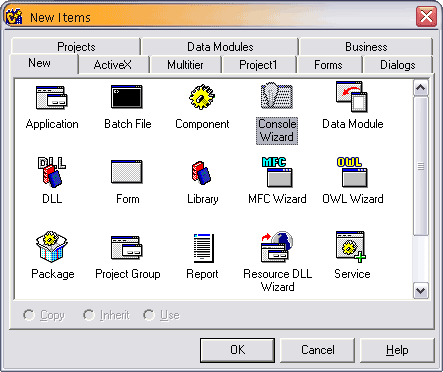
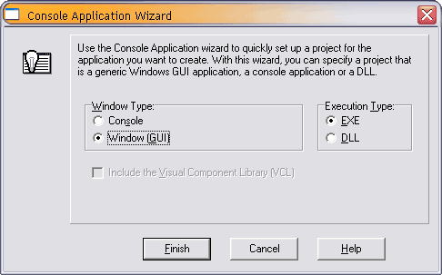
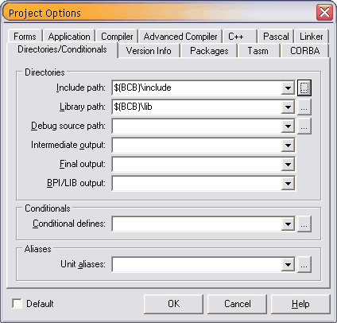
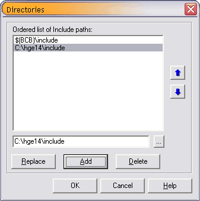
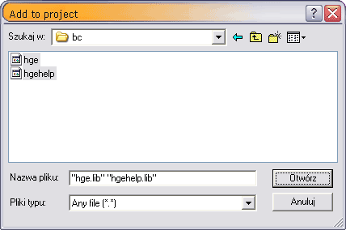

Borland C++ Builder 4
1. Создание пустого проекта Win32 Application
Откройте File->New..., выберите Console Wizard из закладки New и нажмите OK:

В следующем окне выберите Window [GUI] из группы Window Type и нажмите Finish:

2. Установка путей до библиотек и заголовков
Откройте Project->Options..., выберите закладку Directories/Conditionals и нажмите
кнопку ... чтобы указать директорию в Include path:

Найдите HGE директорию "include" и нажмите Add, и OK:

Повторите эту операцию с Library path, HGE указывая директорию "lib\bc".
3. Добавление библиотек в проект
Откройте Project->Add to Project..., и напишите путь до HGE файлов hge.lib и hgehelp.lib
из директори "lib\bc" folder:

4. Начинайте писать код!
Включите hge.h для доступа к функциям HGE. Смотрите секцию
Примеры с простыми примерами кода.
|